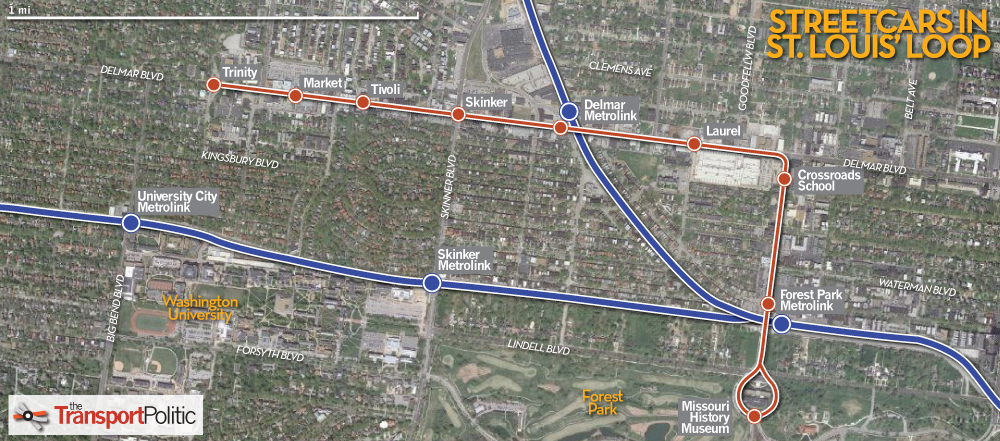

6 Prediction
Today’s Goals:
- Introduce several methods for predicting the impact of our programs
- Conduct an in-class meta-analysis
- Discuss two CBAs (Supervised Injection Facilities and Job Corps)
Today marks the beginning of Part 2 of the course (out of three parts). In Part 1 we focused on the conceptual and economic foundations of CBA. In Part 2 we will build up a toolkit of specific techniques that you can use when conducting your own CBA. If you haven’t started thinking about what you will do for your Final Project, now is a good time to start!
A central part of cost-benefit analysis is prediction. Ironically, this is the step for which Boardman offers the least guidance. Broadly speaking, there are three major errors that CBAs make at this point.
- Omission Errors: Excluding a relevant impact
- Forecasting Errors: Inaccurate prediction of the program’s true effect
- Valuation Errors: Inaccurate estimates of the relevant shadow prices (more on this in Weeks 7 and 8)
Today, we’ll discuss three methods that can help you make better predictions—meta-analysis, models, and Fermi methods.
6.1 The Wisdom of Crowds & Meta-Analysis
Exercise 1:
Guess how heavy this object is in kilograms.
(Bonus Fun: we’ll learn how to implement functions in Excel.)
6.1.1 Diversity Prediction Theorem:
The Diversity Prediction Theorem (Page, 2007) states that the collective error of a diverse group will be smaller than the average error of individuals.
Collective Error = Average Individual Error – Prediction Diversity
In mathematical terms, if \(\mu\) is the true value, there are \(n\) predictors who each predict \(X_i\), and the collective prediction is \(\bar{X}\), then: \[ (\bar{X}-\mu)^2 = \frac{\sum(X_i-\mu)^2}{n}-\frac{\sum(X_i-\bar{X})^2}{n} \] There’s no guarantee that the crowd will predict better than the best individual, but the crowd is guaranteed to predict better than the average individual. This idea—that taking the average of a group of predictions will tend to yield better results than a random single prediction—is the logic underlying meta-analysis.
6.1.2 Best Practices for Meta-Analysis:
There is a big literature on meta-analysis. A lot of it is technical and beyond the scope of this class. So here are my expectations if you choose to conduct a meta-analysis for your final project.
- Collect as many studies as you can find (bigger crowds are wiser than smaller crowds).
- Some studies will evaluate a policy that is similar in some way or is based on a slightly different population. Beware of over-extrapolating and use your best judgment on whether this study is informative for your context.
- Keep the ones with the most rigorous research design. We want causal estimates, not just correlation.
- Best: Double-blind randomized control trials
- Good: Natural experiments, quasi-experimental methods (e.g. regression discontinuity), difference-in-difference
- Not Good: Correlational findings, cross-sectional regression
- Bad: No treatment-control comparisons
- Where possible, standardize the effect size
- Divide by the standard deviation of the outcome
- Compute a weighted average
- Keep the uncertainty estimates for sensitivity analysis
Exercise 2:
Now we’ll conduct a meta-analysis as a class. The topic is open, but let’s pick one where we’ll probably find lots of studies.
Author (Year) Quality (1-5) N Estimated Effect 95% Confidence Interval Notes
6.1.3 Pitfalls of Meta-Analysis:
- The File Drawer Effect
- There is a bias in academia against publishing null results. As a result, the estimated effects you find in the published literature are likely to be overestimates.
- External Validity
- The results of a study in one population may not replicate to your population of interest
- Cherry-picking
- Select studies based on objective criteria; never select based on a study’s results.
6.1.4 CBA of the Day #1
6.2 Models and Simulations
What if there are no published studies estimating the effect of the policy you care about?
- Maybe it’s never been tried before.
- Maybe it would be unethical to conduct a randomized-control trial.
- Maybe there are some studies, but you have serious concerns about external validity
- Maybe there are some studies, but they are all poor-quality, and they likely overestimate the true effect
One option is to consider models or computer simulations. Common in lots of fields:
- Macroeconomics (can’t run experiments on the economy)
- Infectious disease modeling (can’t run experiments on pandemic vaccination policy)
- Climate models (can’t run experiments on global carbon emissions)
6.2.1 Example – Tobacco Town:
6.2.2 Example – CBA of the Day #2:
6.3 Fermi Methods
What if you don’t have good empirical studies and you don’t have a computer simulation? What if you just have to…guess? Fortunately there is an academic literature on how best to make educated guesses.
The Fermi Method—named in honor of physicist Enrico Fermi—uses a divide-and-conquer approach.2 For example, suppose we wanted to estimate how many piano tuners there are in the city of Chicago. A Fermi approach would look like this:
- How many households are in Chicago? (1 million)
- What percentage of households own pianos? (Maybe 1 in 10?)
- How often do pianos need to be tuned? (Once a year)
- How many pianos can a piano tuner tune every day? (About 4)
So we would guess:
\(1,000,000\) households \(\times\) \(\frac{1}{10}\) pianos/households \(\times\) 1 tunings/piano \(\div\) \((4 \times 365)\) tunings/tuner \(\approx\) 68 piano tuners in Chicago
6.3.0.1 Bounds Analysis
To be really careful, calculate lower and upper bounds:
Lower Bound: \(1,000,000\) households \(\times\) \(\frac{1}{30}\) pianos/households \(\times\) \(\frac{1}{5}\) tunings/piano \(\div\) \((5 \times 365)\) tunings/tuner \(\approx\) 4 piano tuners in Chicago
Upper Bound: \(1,000,000\) households \(\times\) \(\frac{1}{5}\) pianos/households \(\times\) \(2\) tunings/piano \(\div\) \((2 \times 365)\) tunings/tuner \(\approx\) 548 piano tuners in Chicago
A safe bet is that there are somewhere between 4 and 548 piano tuners in Chicago.
Exercise 3:
The Loop Trolley is a good example of a project that could have used a rigorous cost-benefit analysis prior to execution. See here and here for some background.
This is a map of the Delmar Loop Trolley route.
Using the Fermi Method, predict the total fare revenue the Trolley earned between November 16, 2018 and July 1, 2019. The service operated from noon-6pm Thursdays through Sundays, and cost $2.00 for a two-hour fare.3
The most famous example of a Fermi Problem is the Drake Equation.↩